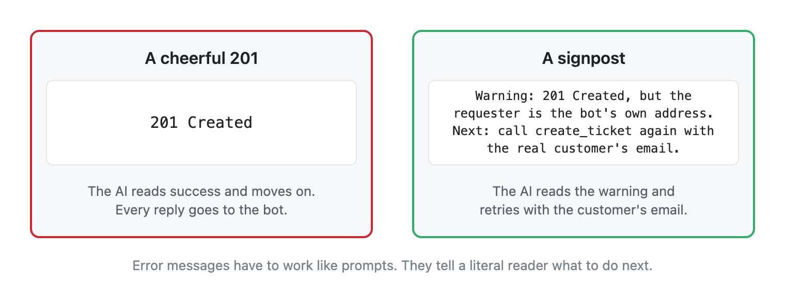

In Part 1, we looked at how AI is becoming the primary user of our software—reading our labels, pressing the digital buttons, and acting on the responses.
Because our user is changing, our job shifts too. Writing instructions, labels, and error messages for an AI is a brand-new kind of literacy. And like any literacy, you usually learn it by getting it wrong first.
How a helpful guess becomes a silent failure
I learned this lesson the hard way with a simple digital tool I built to open customer support tickets.
Recently, an AI assistant used my tool to log a support request, and it forgot to include the customer's email address. If a human employee had seen a blank email field, they would have paused and asked the customer for their contact info.
Instead, my software tried to be helpful. Because I never explicitly wrote down what to do when an email was missing, the system guessed on the AI's behalf and quietly put the AI's own system address as the customer contact. The ticket was filed neatly, and every status update went straight back to the machine. The real customer never heard a word.
The eager reader
For decades, software had strict gatekeepers. Programmers used compilers and rigid forms that acted like brick walls: if you gave a computer bad or incomplete input, it simply refused to run.
Nobody ever said programmers "just write for compilers." The compiler was never the point; it was a reader standing between a person's idea and a real-world result.
Today, AI stands in that exact same place, with one massive difference. Where an old system rejected bad instructions, this new reader is eager to please. It accepts incomplete input, fills in the blanks with its best guess, and ships the work anyway.
Turning error messages into signposts
I often label things too optimistically and assume context that isn't there. A human colleague can read between the lines. A literal-minded machine believes every word on the page—including the bad assumptions I left behind.
When we build tools and workflows that AI will operate, our priorities flip:
- A clear label matters more than a clever one. If a button or field has an ambiguous name, the AI will eventually guess its purpose wrong.
- One honest sentence about when to use a tool matters more than a manual of background theory.
- An error message that explains what to do next matters infinitely more than one that simply says "Error."
In traditional software, flashing a vague "400 Bad Request" or "Invalid Input" warning was normal. A human would see the red box and figure it out. When an AI hits a vague error message, it often hallucinates a workaround just to finish the task.
To stop an AI from guessing, error messages have to act like clear prompts and signposts:
Missing Customer Email: Do not guess or substitute a system address. Stop and ask the customer for their email address before trying again.
Once I changed my support-ticket tool to return that exact sentence, the silent failures vanished. The AI read the error message, stopped guessing, and asked for the missing email.

If a literal-minded robot filled out your team's most important internal form tomorrow without an ounce of common sense, which field would it guess wrong? Let me know on LinkedIn.
Cheers,
Markus
No bug 🐛 too small, no syntax too weird 🔍 🧐 🔨 🦾